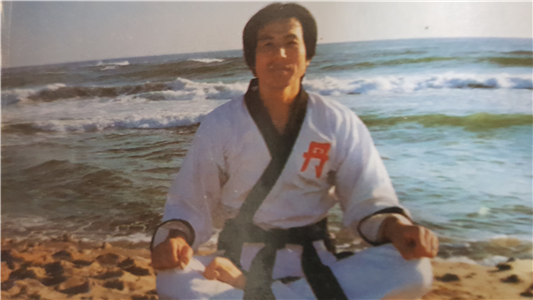
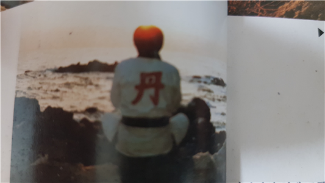

태양(太陽)은 신(神)의 형상이라고 할 수 있다. 태양(太陽)은 그 누구에게도 차별 없이 공평하게 광열을 나눠주며 자연을 살리고 있다. 태양은 조화와 균형의 상징이다. 고대 이집트에서는 태양신을 섬겼다. 고대 이집트의 왕인 파라오(Pharaoh)는 ‘태양의 아들’이라는 뜻이다.
고구려를 상징하는 삼족오기는 태양에 산다는 발이 세 개 달린 상상의 까마귀가 그려져 있다. 지금은 여러 가지 사정으로 인해, 까마귀를 흉조로 여기게 되었으나, 사실 한민족에게 까마귀는 신과 사람을 연결해 주는 일종의 신의 사자로서 여겼다는 것을 알 수 있다.
이는 의미심장한 것으로 필자가 삼족오 기를 보았을 때 깊은 울림이 있었던 것이다. 영통개안시 날아오른 불사조가 태양으로 변화하며 붉은 단광(丹光)을 뿜어내고 있었기 때문이다.
이를 볼 때 삼족오 기는 곧 태양을 상장하는 깃발이라는 의미가 된다.
단전호흡(丹田呼吸)을 뜻하는 ‘붉을 단(丹)’자를 혹자는 주사를 캐는 광산을 형상화했다고 하지만, 단전호흡에서 ‘단(丹)’자를 사용하는 이유는 사실 의미심장한 뜻을 지니고 있는 것으로 본다.
‘단(丹)’자를 파자해 보면 ‘―’ 수평선에 ‘○’ 태양이 떠오르는 것을 상징하고 있다. 바다에서 떠오르는 태양을 상장하는 것이다.
호연지기회(浩然之氣會)는 자연으로 나아가 넓은 마음을 기르며, 궁극적으로 완성된 생명에너지인 단(丹)을 기르는 모임이다.
하지만, 호연지기회는 모임이면서 모임이 아니다. 자연으로 나아가 서로 무언의 유대감을 가지며 도움이 필요한 사람이 있으면 서로 도움을 주고받되, 수행이 끝나면 미련 없이 각자의 자리로 돌아가야 하는 모임이다. 아래 규칙은 반드시 지키되, 규칙에 얽매이는 우를 범하지도 말아야 한다.
규칙이 있는 것은 회원이 많이 모일 경우 최소한의 안정장치 때문에 정하는 것이며, 중요한 것은 항상 중도(中道)를 잣대로 하여 판단하라는 뜻이다.
친목으로 분위기를 망치는 사람이 생기거나, 회원을 이용해 돈을 벌려는 목적이 있거나, 모임에 부작용이 생기고 정도(正道)를 어기는 사람이 있으면 즉시 모임은 해산하고 홀로 호연지기회의 참뜻을 이으며 수행에 힘쓰길 바란다.
우리는 홀로 있으면서도 함께 있고, 함께 있으면서도 홀로 있는 사람들이다.
1. 호연지기회만의 어떠한 단체도 만들지 말라.
2. 혼자 있고 싶은 사람을 방해하지 말라. 아무것도 강요하지 말라. 그는 자유인이다.
3. 간혹 회원을 만나더라도 아무것도 묻지 말고 조용히 근처에서 수행하라. 눈인사로 족하다.
4. 어느 누구도 좌장 노릇을 하지 말라. 남과 비교하고 우열을 만들지 말라. 타인이다. 각자의 수행에 힘쓰라.
5. 조용하고 고요하라. 말을 하면 기가 빠져나가고, 웃고 떠들면 기어코 근기를 헤친다.
6. 각자 자연으로 나아가 오고감 없이 자연스럽게 모이게 되면 모이고, 다시 세상으로 흩어져 살아라.
7. 자연은 지친 몸과 마음을 잠시 쉬게 하며 기운을 기르러 오는 곳이다. 세속을 떠난 곳에는 배울 점이 없다.
8. 스스로 스승이 되라.
- 묵산 -